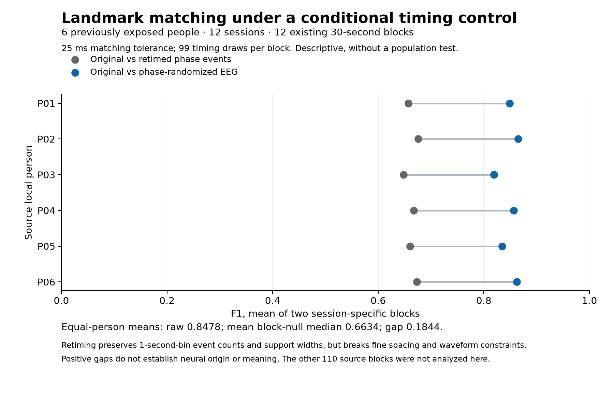

Exploratory follow-up to Experiment 012 · 28 September 2026 · v0.11.0
How much matching survives a timing shuffle?
Independent protocol and scientific output review accepted. On six previously exposed people, mean landmark matching was 0.8478 F1 for original versus independently phase-randomized EEG. Retiming the phase-side events within one-second bins reduced the mean block-null median to 0.6634.
The descriptive gap is 0.1844. The timing control also breaks fine spacing and waveform constraints, so this gap cannot establish neural origin, meaning or a playback-interference mechanism. No population significance test was run.

A fixed, bounded comparison
The first selected block in each person/session cell was fixed before this analysis: twelve of the original 122 thirty-second blocks. All selected blocks and draws completed. The other 110 blocks were not analyzed here. The same accepted matcher, guarded support and 25 ms tolerance were retained; 10 and 50 ms were sensitivity views.
| Measure | Denominator or result |
|---|---|
| People / sessions / blocks | 6 / 12 / 12, all previously exposed |
| Selected time / common guarded support | 360 seconds / 228.672 seconds, counted once per block |
| Original / phase eligible events | 38,143 / 37,910 |
| Raw matched pairs at 25 ms | 32,279 |
| Mean block raw F1 / mean block-null median | 0.8477986 / 0.6634331 |
| Equal-person mean difference | 0.1843655; descriptive only |
Retiming keeps event counts in each channel, stratum and one-second bin, along with support widths. It does not keep fine event spacing, refractory structure, synchrony or a realizable waveform. Substantial matching survives this control, but the remaining gap cannot identify its cause. One block per session also cannot establish full-session reliability.
The independent-person pool is smaller for ear-only recordings
A pinned metadata audit found nine remaining EESM19 ear-only candidate people with 108 sessions. Ear contacts from PSG sessions offer nineteen candidate people with 76 sessions. These are source-local metadata upper bounds; qualification, usable hours, measurement compatibility and relevant cross-dataset overlap are not established.
A twelve-person ear-only design cannot be filled from that pool. Nine people is only the first attainable significance size for a two-sided exact participant sign-flip test with the prior eight-test Bonferroni family, not evidence of adequate power. A PSG-session design needs its own measurement contract, effect margin and power analysis before reserved waveforms are examined.
Inspect the evidence
Complete research note and source links · Independent output review · Offline reproduction · Versioned supplement and checksums
No new people or source hours enter the corpus. The consolidated catalog remains at 89 candidate recordings, 88 qualified recordings and 476.053296 qualified source hours. Earlier experiments retain their original results. Physical Neurable equivalence, physiological calibration and semantic interpretation remain unestablished.